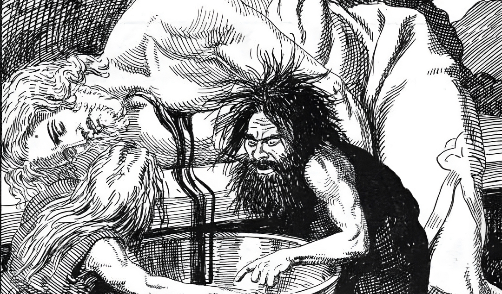

Magic Mead

Wisdom in a bottle
This time Fjalar and Galar will share us their famous recipe for Magic Mead
Ingredients
Steps
- Invite Kvasir to eat dinner.
- Kill him in cold blood.
- Store his blood on a pot with honey. Let it ferment and voila! Magic mead that will make you wiser than odin itself.